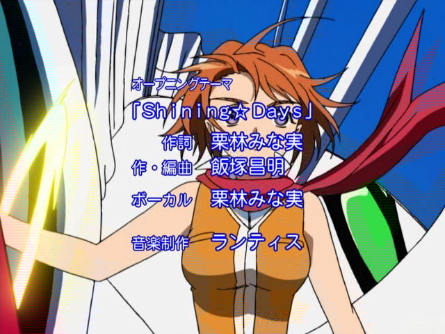
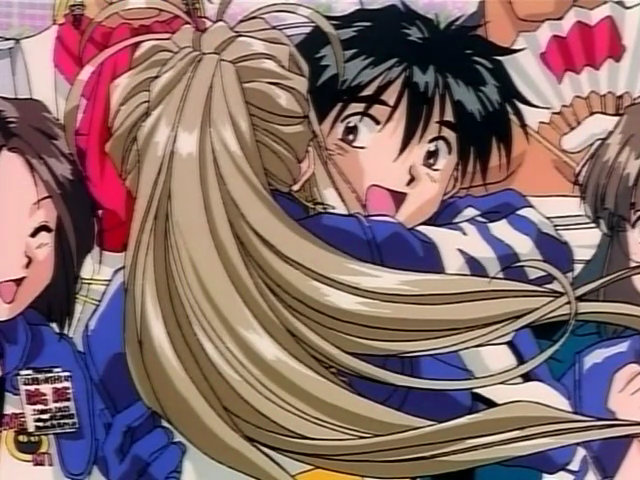
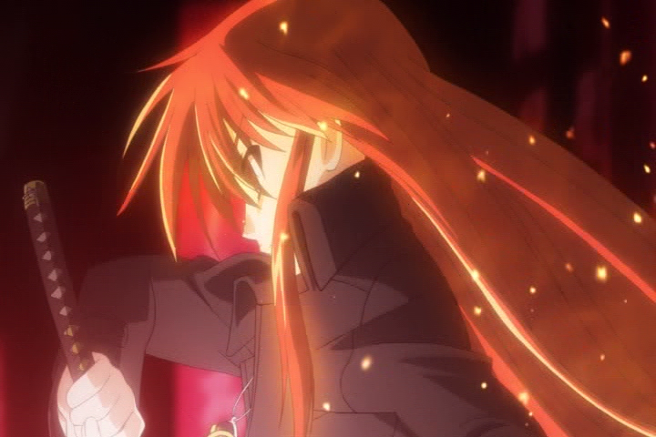

- Home
- IRC Rules
- Botlist
- Releases
- FAQ
- Encodes Help
Join our IRC Channel:
Server: irc.rizon.net
Chan: #Exiled-Destiny

|
R2 Information: What is it, and what does it mean to you?
Recently some of our encodes have been poping up with a special tag located in their filename. This tag looks like this:
[Exiled-Destiny]_My-HiME_Ep01_[R2_Video]_(7D7887A7).mkv
If you can't spot it, its the [R2_Video] part. So what does this mean? Is it even important or just a stunt by our group? It's simple actually, it all has to do with the video quality.
What is R2, R1, stuff?
Basically when ever the phrase R(# 1-7) comes up and is related to DVD, it is talking about a DVD's Region Coding. This is just a code put on each DVD that makes it only viewable in that region from which it was produced. For instance, R1 DVD's are restricted to viewing only in the following places, "Bermuda, Canada, United States and U.S. territories". R2 DVD's can be viewed in "The Middle East, Western Europe, United Kingdom, Central Europe, Baltic States, Egypt, French overseas territories, Greenland, Japan, Lesotho, South Africa and Swaziland". This is the basis of Region Coding, for more information, check out the Wikipedia entry at DVD region code
So.. how does this effect video quality?
I thought you would never ask! In the anime world when talking about Region Coding, R1 stands for Region 1 and 99% of the time means it came from America. R2 stands for Region 2 and 99% of the time means it came from Japan. The actual Region Coding makes no impact on the video quality directly... but what it does tell you is where the video originated from and of course probably what langugage it is in. And this is the key, because generally in Japan they are able to spend a lot more money on DVD production for their Anime. Sadly here in the US, anime companies are hit pretty hard by licensing fees and the sort and just can't spend enough on the production of their DVD's.
So why aren't the DVDs the same quality?! It's the same show just different dubbing, right? Wrong! Japanese anime companies spend a lot to create and author their DVD's, they almost never just turn over their production sources and at times send a second rate copy of their master to a US company for their production. This means that 99.9999% of the time, you never see R2 video from Japan in US R1 dvds. The American counter-parts are created separatly from their own mastering process, which because of cost, usually is sub-par from their Japanese twins. Sucks in a way, right?
Show me the money!
By this point it should be obvious why we are using R2 Video on select encodes. The video quality. This means the highest video in quality that can be provided is being done. That's great for you and everyone! But maybe you are still a bit skeptical, and you want to actually see the difference. Great news, here is some screen caps of encodes we have done showing off R1 and R2 counter-parts. Simply mouse over each screen cap to reviel the better looking R2 screen cap. Just to mention All screen caps provided here are taken from final encoded material released by us. The only exception is Example 3: Shakugan no Shana, which was taken using VirtualDub and was using no filters at the time except for some cropping and resizing in the R2 source. Other than that, it's 100% source taken.
Example 1: My-HiME

This makes me sick to see and was the main reason for starting to use R2 video. The first image represents R1 video, while the second one represents R2 video. So what's the matter with it? The first image illustraits something that can pretty much never be fixed even with very advanced filtering. I don't want to get into it too much, but basically it is Blending. More specific it is called chroma field blending, which is blending of the telecined fields made during the mastering process. Thats why it makes those combed lines of color, and looks like an after-image. Also note the the color is more vibrant and less washed out in the R2 cap.
Example 2: Ah! My Goddess (OVA)

I was reluctant to even include these caps, but the difference is so damn huge that I just had to. Not to mention a Version 2 was done with what we mentioned to be as CE Video. Meaning the Collector's Edition DVDs (R1). Also having seen some caps from the actual R2's I can say that the new Ah! My Goddess dvd's either use R2 video or come very close to being exact in quality. Although I lean more towards it using a R2 source heh. The difference should be able to be seen by a blind rock. If you can not tell the difference here... please leave now. :)
Example 3: Shakugan no Shana

This is our most recent release using R2 video as of 09/01/06. I have to say, that it is harder to show the difference in video quality here to someone who doesn't know what to look for.If you got better eyes you can tell the difference from here though. I'll point them out as well.
First off, there's some blending here inherient from the telecine process. Although not as severe as My-HiME, it can be seen in Shana's hair and shoulder of her jacket. You will see lines that double up and re-occur either lighter or darker. Notice it is not in the R2 screen.
Many scenes throughout all episodes like this are very over processed causing it to be incorrectly compressed. You can see a great deal of detail loss and noise throughout her hair and jacket which just causes blocking and noise. Also look at the hand holding the sword. The coat cuff and button are almost entirely taken out of the R1 release, but very aparent in the R2.
These are un-filtered sources by the way. Now im not saying this is a terrible R1 source by far... but why have to filter and remove even more detail and have the blending in there? Overall it was better to choose the R2. It had less blocking, noise, more vibrant less washed out color and exhibits no blending. Good deal if you ask me!
|